Intro_to_Electronics
Fri, Jun 26, 2015Introduction and History
Where it all began..
Thomas Edison’s New year eve party in 1880.
It all began on September 15, 1878 when a group of New Yorker reporters traveled to Thomas Edison’s laboratory in Menlo Park, NJ.
‘When I am through, only the rich will be able to afford candles’ said the wizard of Menlo Park.
JP Morgan was among the first backers who hastily provided capital
The first main power station to go online and feed power to street lights and houses was in
New York.In 1882, the first main power station went online feeding electricity to some of the wealthiest and initial backers and their street lights.. about 400 electric bulbs
What is Electricity ?
Electricity is the set of physical (Electrical) phenomena associated with the presence and flow of electric charge
[]()
Wikipedia
Electric Charge
####What is an Electric Charge? * It’s the stuff that causes electrical phenomena.
####What are electrical phenomena? 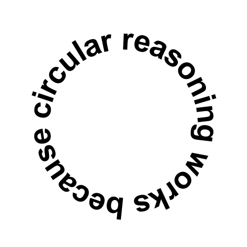 * Those are the things caused by charge!
Simple, no?
- There is a good reason why the definition of “charge” is circular.
- Like mass, length, and time, Electric Charge is a “fundamental.” For example Time is defined as a point of time as measured in hours and minutes past midnight or noon.
- Many dictionaries say this: “Electric charge: a fundamental property of matter.”
- The word “Charge” is used to define other things, and therefore the definition of the word “charge” becomes a serious problem!
- What is an electric current? It is a flow of charge.
- What is electric charge? It is the stuff that flows during an electric current!
###So What is an Electric Charge?
…the stuff that flows during an electric current.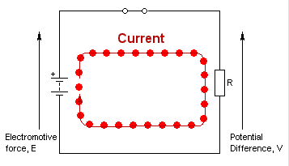
The red “stuff” that you see going from positive terminal to negative terminal is the Charge!
…the stuff that appears on a balloon when you rub it on your hair.
< If people are Interested >
Ask them: 1. Why Static Electricity does not kill you but current electricity of same potential might?…the stuff that comes in two kinds: positive and negative.

[SHOULD I KEEP THIS???????]
* Charge is not
…energy
…not just a property
…not invisible
[SHOULD I KEEP THIS???????]
* A fixed quantity of charge can possess many different amounts of energy at the same time
* Not invisible? Think of an electric arc, or a spark
##AC / DC
AC and DC both describe the flow of electric current in a circuit.
In Direct Current (DC), the electric charge (current) flows only in one direction.
In Alternating Current (AC), the electric charge (current) changes direction periodically.
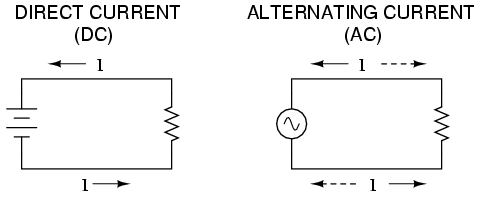
So which is better?
- Most of the digital electronics that you build will use DC.
- Most homes are wired for AC, so if you want to plug in your electronics items (or your project), you need something called AC to DC converter.
- AC has some useful properties like being able to convert voltage levels using single component, a transformer.
- For transmission, we need to reduce the power loss through the cables, which is proportional to I^2. Thus we need to reduce the current flowing, this can be easily done by using AC step up and step down transformer (keeping power constant). But beyond 700km something, DC becomes more economical(HVDC).
##Alternating Current (AC)
Alternating current describes the flow of charge that changes periodically.
Generating AC
AC can be generated by a device called an alternator.
from IPython.display import YouTubeVideo
YouTubeVideo('i-j-1j2gD28',width=640, height=480)
<iframe
width="640"
height="480"
src="https://www.youtube.com/embed/i-j-1j2gD28"
frameborder="0"
allowfullscreen
></iframe>
Generating AC
Consider an analogy of a set of water pipes
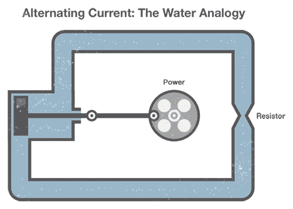
##AC Waveforms
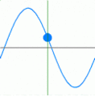
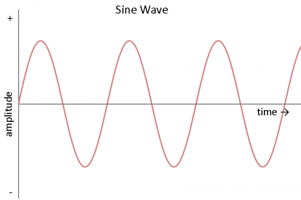
- We often want to describe AC waveform in mathematical terms.
##AC Waveforms
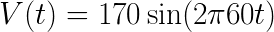
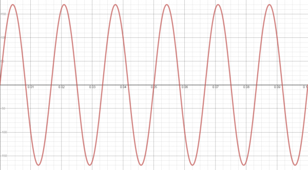
- A simple sine wave consists of three parts: amplitude, frequency and phase.
- V(t) is our voltage as a function of time.
- 170 is the amplitude which is max voltage.
- 2pi is constant to convert frequency (in Hz) to angular frequency (radians per second)
- 60 is the frequency of sinewave
t is our dependent variable in seconds
So what is output voltage? 170? No! Its RMS value is 120!
##Direct Current (DC)
Direct current provides a constant voltage or current.
- DC is a bit easier to understand. DC is generally obtained from AC alternator via a rectifier circuit.
- There is actually not much to talk about in DC
##DC Waveforms
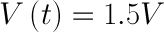
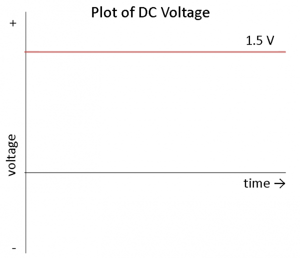
- So this means that voltage remains constant and is independent of time.
##Voltage (V)
Potential DIfference between two points is expressed as volts (or voltage)
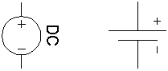
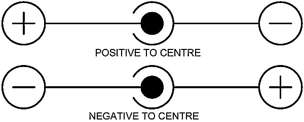
- Now we know that Charge is a fundamental property, but we need to know what is responsible for the flow of this charge and how much energy is being carried by a charge.
- This is where Voltage comes into the picture.
- Voltage is a measure of electric potential energy per unit charge measured or simply, how much is the energy per unit charge. in volts.
- Voltage is the difference in charge between the two points.
- Give the example of water flowing through a tube (Pressure in the tube)
##Current (I)
####An electric current is a flow of electric charge
- So we know that we need to create a potential difference for charges to flow. But now We need some way to quantify those red dots.. basically find how many of those electric charges will flow..
- Current tells us about the flow of charge.. how many coulombs per second is flowing.
- Give the example of water flowing through a tube (amount of water flow).
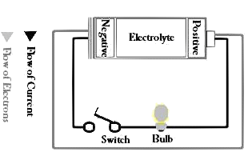
- Remember that electrons always flow in the opposite direction of charge because in metals it is the negatively charged electrons that carry charge!
- So basically what we see here is that voltage or potential difference is what causes the flow of current or the charge.
Resistors ®
A Resistor is a two terminal passive electrical component with the primary function to limit the flow of current.
- So basically anything that interferes with the flow of electrons in other words, anything that obstructs the flow of current or charge is known as resistance.
- Every electrical component has certain resistivity (based on the material it is made up of)
Resistance

- Give the example of water flowing through a tube (narrow the tube or obstruction in flow of water )
- We can also observe that resistance depends on the length of the conductor, cross-sectional area, and resistivity of a material.
- We now get a feeling that voltage, current and resistance are somehow related to each other.. and indeed they are. The rule/ law that gives a relation between these is known as Ohm’s Law
Types of Resistors
| Fixed | Variable | Dependent on Physical Quantity |
|---|---|---|
| 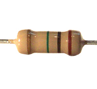 | 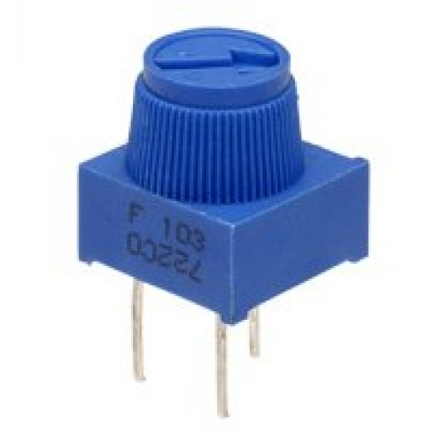 |  |
| Value is based on Color Codes | Value is printed on the Pot | Value is theoretically between 0 and inf |
| Example: Fixed to drop Voltage | Example: Potential Divider | Example: Sensor for measuring something |
- Fixed value resistors have a permanent value and cannot be changed
- Variable resistors or potentiometers have a variable resistance
- Resistance can also be changed based on the physical quantity, such resistances are called <something> dependent resistor. For example, LDR
- The value of the fixed resistors is Color coded. Meaning that the resistance of the resistor is based on the color codes.
- On a potentiometer, the minimum and maximum value is mentioned.
- You will also observe that potentiometer has 3 terminals. We need to connect the 1st and 2nd OR 2nd and 3rd.
- The resistance dynamically varies for a something dependent resistor based on the instensity or magnitude of that something
{kind=link}
- Resistances have different construction materials, but we will mostly be using Carbon Film type or Metal Film. Metal film type resistors have higher accuracy.
###Reading a Resistor
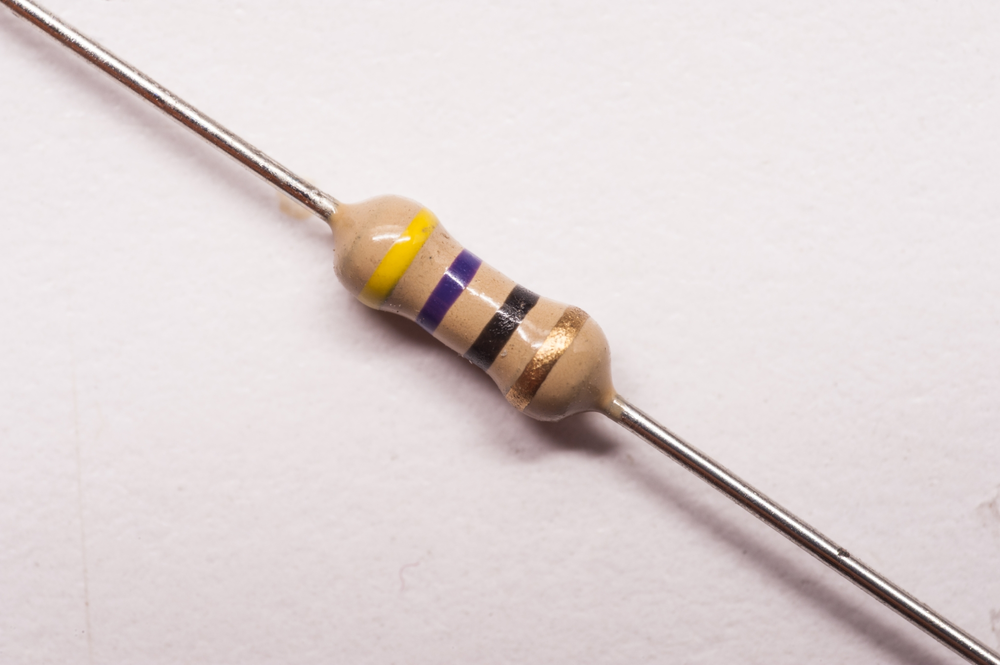 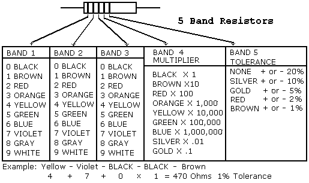
##Ohm’s Law
The current flowing through the conductor is directly proportional to the potential difference accross two points (Resistance being the constant factor).
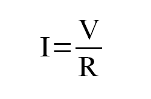
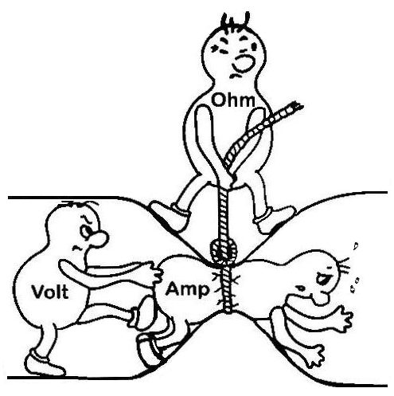
- Ohms law is one of the most important laws that you will come accross in electronics.
Let’s take a look at a small but very practical example
from IPython.display import HTML
Example
HTML(’’)
Capacitors
A Capacitor is a two terminal passive component, separated by a dielectric medium, with a primary function to store electric charge.
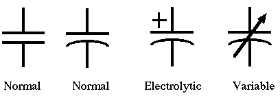
- What makes capacitor special is its ability to store charge. Think of it as your temporary battery.
- Lets look at the construction of the capacitor.
- Most capacitors can be non polarized up to about 1 microfarad
Capacitor
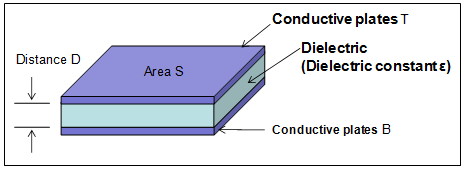
- A capacitor is created out of two metal plates and an insulating material called a dielectric.
- The metal plates are placed very close to each other, in parallel, but the dielectric sits between them to make sure they don’t touch
- The dielectric can be made out of all sorts of insulating materials: paper, glass, rubber, ceramic, plastic, or anything that will impede the flow of current.
Capacitor
Working of a capacitor:
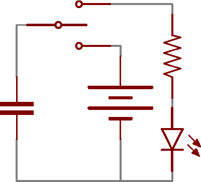
- When current flows into a capacitor, the charges get “stuck” on the plates because they can’t get past the insulating dielectric. Electrons – negatively charged particles – are sucked into one of the plates, and it becomes overall negatively charged.
- The large mass of negative charges on one plate pushes away like charges on the other plate, making it positively charged.
- If you take off the supply to the capacitor, the capacitor is still charged and that’s why it is always suggested that before opening any electrical device, you should wear rubber gloves and after disconnecting it from power source, flip its mains switch onn and off for atleast 5- 10 seconds (This is not applicable for CRT TVs.. leave them overnight!!)
Types of Capacitors
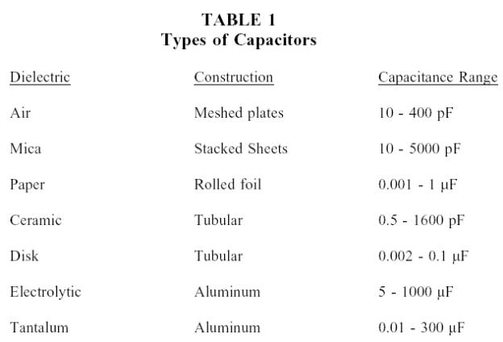
- The name of different types of capacitors comes from the dielectric that they are made up of.
- Ceraic capacitors are most commonly used and most commonly produced.
Types of Capacitors
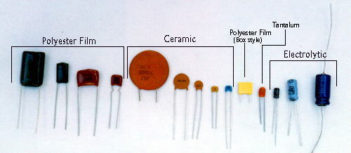
- Electrolytics are great because they can pack a lot of capacitance into a relatively small volume.
- They’re especially well suited to high-voltage applications
- Super capacitors are actually the ones that can have capacitance of more than 1F but they are not suited for high voltages. Infact the 10F capacitor is rated for 2.5V, to overcome this, or infact any other low voltage capacitor’s drawback, we can apply multiple such in series
Series and Parallel Circuits
If components share a common node and if the same current flows through them, they are in series
If components share two common nodes, they are in parallel.
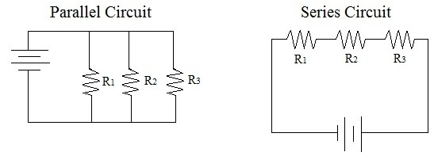